Make Blim connect before worrying about finding the worst possible gift. Every successful trigger needs a permanent you can afford to give away, and every copied trigger needs its own legal target. Evasion, protection, and a supply of expendable permanents are what make this deck work repeatedly.
What a successful hit actually does
The deck targets Bracket 3 with Demonic Tutor, Vampiric Tutor, and The One Ring as its three Game Changers. The tutors primarily find evasion, protection, and needed gifts. There is no intentional infinite-combat package or mass land denial. Build a board and aim to finish from turn six onward; do not use acceleration and tutors to race a premature Pact elimination. Estimated tier B: the deck has strong support for its engine, but combat access and commander survival still determine its pace.
Distribute some gifts before concentrating damage. An opponent holding two of your permanents loses two life on every later Blim trigger, regardless of whom that attack hit. Empty-handed players still lose the full amount of life; they simply cannot discard more cards than they have. Your own permanents you regain are not counted against you.
Tokens you create and then give away count because you remain their owner. Tokens an effect tells an opponent to create are normally owned by that opponent, so those tokens do not count merely because your spell caused their creation. Blim's ability deals life loss, not commander damage; only combat damage from the actual commander contributes toward twenty-one.
The exact gift and target rules are in Wizards' Commander Legends release notes: https://magic.wizards.com/en/news/feature/commander-legends-release-notes-2020-11-06
Get Blim through every turn
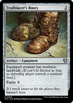
Trailblazer's Boots
Nonbasic landwalk bypasses blockers against opponents with a nonbasic land. Check the defending player's actual lands rather than assuming it is always unblockable. Once equipped, it does not require a mana payment every combat.
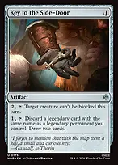
Key to the Side-Door
Pay two and tap to make Blim unblockable for the entire turn, including later combats. It is cheap to deploy before your commander and avoids the upkeep costs of repeatedly equipping another creature. Its same-name discard mode is usually irrelevant in this singleton list.
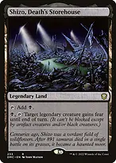
+
Shizo, Death's Storehouse + Rogue's PassageLand-slot ways to connect when your Equipment is removed. Shizo grants fear, so black and artifact creatures can still block if they can block a flyer. Passage is unconditional but costs four mana plus tapping the land. Activate either before blockers are declared.
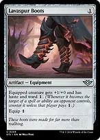
+
Lavaspur Boots + Swiftfoot BootsHaste means a newly cast or recast Blim can immediately deliver a gift. Lavaspur is cheap and adds one power but only ward one; Swiftfoot gives actual hexproof. Neither prevents a nontargeting board wipe, and an equip activation can be answered before protection is attached.

Arena of GloryIts exert activation can give a Blim creature spell haste when its mana pays for that spell. The land skips its next untap, so use this when an immediate hit is worth the delayed mana. It does not grant haste to Blim returned by Reanimate, because that is not a creature spell being cast.
Multiply the donation triggers
Spectacular Showdown + Blim, Comedic GeniusPut a double-strike counter on Blim for two mana. If he connects in both damage steps, he triggers twice. The goad instruction does not prevent your own Blim attacking your opponents. The counter stays until he leaves the battlefield; the goad duration does not. Double strike does not let a blocked creature without trample hit the player just because its blocker dies in first-strike damage.
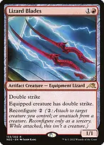
Lizard Blades
Another reusable source of double strike. Reconfigure it onto Blim after deploying it; its own body also provides an emergency donor or sacrifice resource when that is more important. Paying to move it after Blim dies is preferable to needing a new one-shot effect every turn.
 +
+Roaming Throne + Blim, Comedic GeniusChoose Imp. Each actual Blim combat-damage trigger then triggers an additional time. Give the two triggers different permanents: once the first gift changes controller, a second trigger targeting that same gift no longer has a legal target. Throne does not double unrelated artifact or enchantment triggers just because it is in the deck.
Strionic Resonator + Blim, Comedic GeniusPay two and tap Resonator while a Blim trigger is on the stack to copy it, choosing a different gift for the copy. You cannot change the damaged-player recipient; that player is not a target of the ability. Budget both the activation mana and the extra gift before committing to combat.
++ Spectacular Showdown + Roaming Throne + Blim, Comedic GeniusDouble strike plus Throne can produce four gift triggers from one unblocked attack. With no preexisting gifts, four distinct permanents successfully sent to the same player make that player lose one, then two, then three, then four life, for ten triggered life loss plus Blim's combat damage. Objects leaving play or changing control between resolutions change that arithmetic.
Delina, Wild Mage + Blim, Comedic GeniusAttack with Delina to create at least one nonlegendary, tapped-and-attacking Blim copy if her ability resolves. Each copy that hits a player generates its own donation trigger. The copies can attack different opponents and do not need to attack Delina's defender. They copy Blim's printed characteristics, not counters or Equipment bonuses, and their damage is not commander damage. Protect Delina or choose a safe attack for her; her trigger still resolves if she later dies in combat.
+ Delina, Wild Mage + Roaming ThroneWith Throne naming Imp, it doubles the triggers of the Blim copies, but not Delina's attack trigger because Delina is not an Imp. The copies exile at end of combat even if you give them away. They can be temporary emergency gifts, but do not count as permanent donations and should not be given away before they have dealt the damage you need.
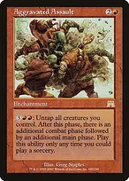
Aggravated AssaultA repeatable five-mana extra-combat outlet for developed boards. Activate in a main phase after attacking, then use the new main phase to develop or activate again if mana permits. Untapping creatures does not untap your lands and rocks. This list does not build toward a self-sustaining infinite-combat loop.
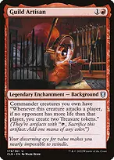
+Guild Artisan + Roaming ThroneArtisan grants the commander an attack trigger that makes two Treasures when attacking an opponent tied for the highest opposing life total. Throne naming Imp doubles that granted ability on Blim, for four Treasures if both conditions remain true. Four alone do not pay Assault's five-mana activation. Choose whether the mana is worth attacking that player rather than the safest defender.
Gifts that replace themselves or help before leaving
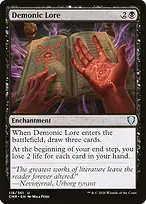
Demonic Lore
Draw three on entry, then give it away before your end step when possible. Its controller loses two life per card in hand at their end step. Blim's discard reduces that future punishment, so its main strength is three cards plus a lasting foreign permanent, not a guaranteed lethal life-loss engine.
Greed's Gambit + Blim, Comedic GeniusKeep the initial three cards, six life, and three flying Bats, then donate the enchantment. The recipient handles its end-step discard, life loss, and creature sacrifice. The Bats remain yours and can be donated separately. If you cannot transfer the enchantment immediately, budget your own next end-step costs.
Greed's Gambit + Despotic ScepterAfter donating Gambit, Scepter can destroy it because you still own it. Its former controller then gets the leave-the-battlefield trigger: discard three, lose six life, and sacrifice three creatures. Destroying it while you control it makes you pay those costs instead, so it is not a harmless emergency cleanup.
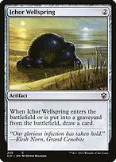
+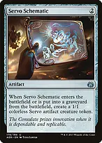
Ichor Wellspring + Servo SchematicLow-risk gifts after their entry abilities give you a card or Servo. Giving away Wellspring leaves a foreign permanent with no useful activated ability. Giving away Schematic leaves the Servo behind as another gift. Their death triggers benefit whoever controlled them immediately before they died, so do not assume you get the later value after donation.
 +
+
Black Market Connections + Kher KeepRepeatable bodies prevent the engine running out of gifts. Connections can supply mana and cards as well, but taking all three modes costs six life each turn. Kher Keep creates a small token for two mana and tapping the land. Unlike a Treasure, that token cannot simply sacrifice itself for mana after an opponent receives it.
Bronze Bombshell + Blim, Comedic GeniusA donated Bombshell counts during Blim's resolving life-loss instruction, then its trigger makes its new controller sacrifice it and take seven damage. It is a burst gift, not a permanent addition to their count. If the sacrifice fails, that trigger does not deal the seven damage.
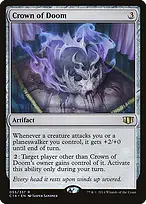
Crown of Doom
A durable gift that rewards the whole table for attacking its controller. It can move among nonowners for two mana, but its own ability cannot send it back to you. The +2/+0 attack trigger only helps attacks declared after the Crown is under that defender's control; donating it after damage does not retroactively boost that attack.
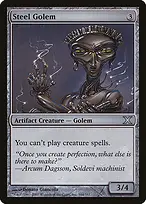
+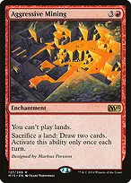
Steel Golem + Aggressive MiningGolem restricts creature spells; Mining restricts land plays. Both can interfere badly with your own recovery if you cast them without a credible handoff. Have Blim or another valid donation route ready first. Mining does not stop lands being put onto the battlefield by Hithlain Rope, and opponents can sacrifice lands to draw through its restriction.
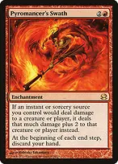
Pyromancer's SwathIts controller discards their hand at every end step, not only their own. Donate it in the same turn you cast it or be prepared to lose your hand. It also improves damage from that player's instant and sorcery sources, so assess the recipient's deck. This is strong hand pressure, not a hard lock on casting spells.
Seed opposing boards even when Blim is unavailable
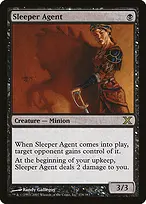
+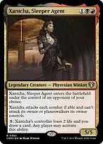
Sleeper Agent + Xantcha, Sleeper AgentBoth can begin under opposing control, adding to Blim's later count without requiring an earlier hit. Sleeper Agent repeatedly damages its controller. Xantcha cannot attack you as her owner, and any player can pay three to make her controller lose two life while the ability's activator draws a card. The card draw is not automatically yours when another player activates it.
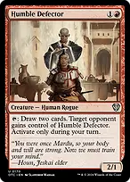
Humble DefectorDraw two and give it to an opponent during your turn. It needs to lose summoning sickness or gain haste before tapping. The recipient can later draw and pass it onward, so choose them deliberately; it is an efficient refill that also seeds a foreign permanent.
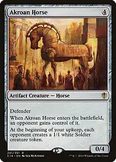
Akroan Horse
Its recipient gets a blocker while their upkeep supplies you and their other opponents with Soldiers. Your Soldiers are further gift material. The other players own the Soldiers they create, so those Soldiers do not increase their own foreign-permanent count. The Horse itself does count against its recipient.
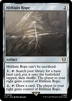
+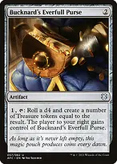
Hithlain Rope + Bucknard's Everfull PurseMana development that also passes a permanent to the player on your right. Rope finds one of the deck's four basics, then becomes a draw option later; it cannot be sacrificed. Purse creates a variable number of Treasures. Opponents can use and pass both onward, so neither guarantees that a specific opponent keeps the gift.
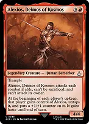
Alexios, Deimos of KosmosA growing, trampling threat that normally moves every upkeep, cannot be sacrificed, and cannot attack its owner. During your turn you normally regain it, so it does not automatically count against an opponent during your attacks. Donate it then if that immediate foreign-permanent count matters; its next upkeep trigger will move it again. It can still block on other players' turns.
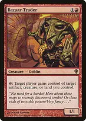
+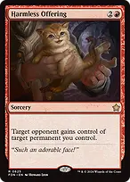
Bazaar Trader + Harmless OfferingBackup handoff tools when combat is blocked or Blim costs too much. Trader gives artifacts, creatures, or lands, but cannot give enchantments. Offering can give any permanent and is the important fallback for a dangerous enchantment. Trader must be able to tap; do not assume a newly cast Trader is an immediate rescue.
Convert the engine into cards and a finish
 +
+
Waste Not + Geth's GrimoireOpposing discards become Zombies, black mana, or cards through Waste Not, while Grimoire draws for every opposing discarded card. These trigger only for cards actually discarded. Waste Not's combat-phase mana disappears when that phase ends unless you spend it first; it cannot normally be saved to activate Assault in the following main phase.

The One RingIndependent card flow when opponents are empty-handed or Blim is removed. Its protection protects you, not your commander, and does not prevent its upkeep life loss. A heavily burdened Ring is a possible late gift, but the recipient also gains a powerful draw engine; do this for a calculated payoff, not automatically.
Demonic Pact + Harmless OfferingTake the useful upkeep modes over several turns, then donate Pact when only the lose-the-game choice remains. The used modes remain used when control changes. This is a telegraphed late-game elimination, not an immediate kill on casting the enchantment. Blim can make the same delivery through combat. Never enter your upkeep holding an exhausted Pact without a way to survive the mandatory trigger.
+
Demonic Pact + Despotic ScepterDestroy your own Pact before the upkeep where you would be forced to choose losing. Once that lose-the-game trigger is on the stack, destroying Pact does not remove the trigger. If a recipient loses the game and the donation control-change effect ends, Pact can return to you with its modes still used; plan another handoff or remove it before your next upkeep.
Repeated Blim hits are the default finish. Double strike adds actual commander damage while every resolved donation trigger drains all seeded opponents and strips their resources. Alexios, token attacks, Crown bonuses, and Bombshell damage add pressure. You do not need to find Pact for the deck to win, and the finite extra-combat effects let a developed position end the game rather than merely prolong it.
Protect the turn that matters
 +
+
Deflecting Swat + Imp's MischiefRedirect targeted interaction where a legal alternative exists. Swat can handle spells and abilities and is free with your commander in play; Mischief handles only a spell with exactly one target and costs life. Neither redirects a nontargeting sweeper. Protect a pending gift's target as well as Blim: losing the gift can invalidate the entire donation trigger.
Deadly Rollick + Withering Torment + Chaos WarpRollick removes a blocker or creature engine, Torment directly answers creatures and enchantments, and Warp covers a wider range of permanents. Removing Blim after his ability has triggered does not erase that trigger, so decide whether you need to save him for future turns or save the gift for this one.
 +
+
Rakdos Charm + VandalblastCharm is instant graveyard or artifact interaction, with a damage mode that can punish a large token board. Vandalblast can clear opposing artifacts but also destroys artifact gifts you want them to keep. Count the resulting loss of future Blim drain before overloading it. Removing a donated Bombshell this way does not trigger its seven-damage ability.
 +
+
Kardur, Doomscourge + Toxic DelugeKardur turns opposing attacks elsewhere for a turn cycle while you assemble the engine. Deluge is the emergency reset when that is insufficient, but it can kill Blim and your creature gifts too. Do not reset the board merely because you can when repeated hits are already winning.
 +
+
Malakir Rebirth // Malakir Mire + ReanimateCheap recovery for a removed Blim. Rebirth only works for death, not exile or bounce, and returns the card under its owner's control. Keep your commander in the graveyard if you intend to return it. Reanimate is sorcery-speed and spends life; Agadeem's Awakening can later recover several creatures with different mana values.
Tutor for reliable connections first
 →
→Demonic Tutor → My Precious // Allure of PowerFind the combined protection and evasion piece when opponents can stop your attacks. If you already have a clear, protected route, a trigger multiplier or draw engine may be the stronger search. Do not automatically tutor a harmful gift while Blim cannot connect.
 →
→Vampiric Tutor → Spectacular ShowdownSets up a cheap permanent double-strike upgrade when your route is clear. The tutor places the card on top, not in your hand; use it before a draw or combine it with an available Ring activation. It can instead find an emergency answer or missing land.
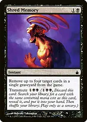
→+++Shred Memory → Trailblazer's Boots + Swiftfoot Boots + Lizard Blades + Strionic ResonatorThese are alternative two-mana tutor targets, not a package you obtain at once. Transmute costs three and is sorcery-speed. Pick evasion, haste and protection, double strike, or a copied trigger according to what is missing. Shred can also simply exile up to four cards from one graveyard when interaction matters more.
Wishclaw Talisman + Despotic ScepterActivate Wishclaw to find the needed card, then let it pass to an opponent. If you cannot afford to let that opponent use its remaining wishes, Scepter can destroy the artifact you still own. Wishclaw's activation is restricted to its controller's turn, which usually gives you a window during your own turn. Destroying it removes one of that opponent's foreign permanents, so choose between safety and future drain.
→ Demonic Tutor → Harmless OfferingFind an emergency handoff if a harmful enchantment is already under your control and Blim cannot connect. You still need three mana to cast Offering after the tutor. Bazaar Trader is not a replacement when the problem is an enchantment.
Opening hands and sequencing
Keep three working lands, early acceleration, and either a connection tool or a draw/gift source. Avoid hands full of harmful permanents with no way to cast and connect with Blim. The deck has 36 lands and two spell/land cards; using one as a spell means it is no longer available as a land drop.
Badlands + Blood Crypt + Raucous TheaterSeven fetchlands find the typed duals to supply black and red reliably. Use Theater when you can afford it entering tapped. Two Swamps and two Mountains are deliberate targets for Hithlain Rope; avoid fetching all of them away before using the Rope.
Cavern of Souls + Command Beacon + Takenuma, Abandoned MireCavern usually names Imp for Blim, but its restricted colored mana cannot pay for your other spells. Beacon moves an expensive commander into hand to avoid command-zone tax on that cast. Takenuma returns a creature or planeswalker from your graveyard to hand. Each is insurance, not a reason to keep a hand without early colored mana.
An illustrative keep is Badlands, Blood Crypt, Command Tower, Arcane Signet, Lavaspur Boots, Ichor Wellspring, and My Precious. Turn one Boots, turn two Signet, then turn three Blim if the board makes that safe. On turn four, Wellspring provides a disposable gift and you can equip Boots before attacking. If opposing flyers or removal make that unreliable, prioritize My Precious instead and delay the attack rather than giving away a crucial land or engine.
Before each combat, count legal gifts and expected triggers, then keep protection available. Use evasion before blockers, choose distinct targets for simultaneous triggers, and do not assume Treasures stay donated once opponents can sacrifice them. Gifts transferred through Blim can return when their recipient leaves the game; permanents that entered directly under that player's control follow different multiplayer-leaving rules and may instead be exiled. Reassess your own dangerous permanents after every elimination.